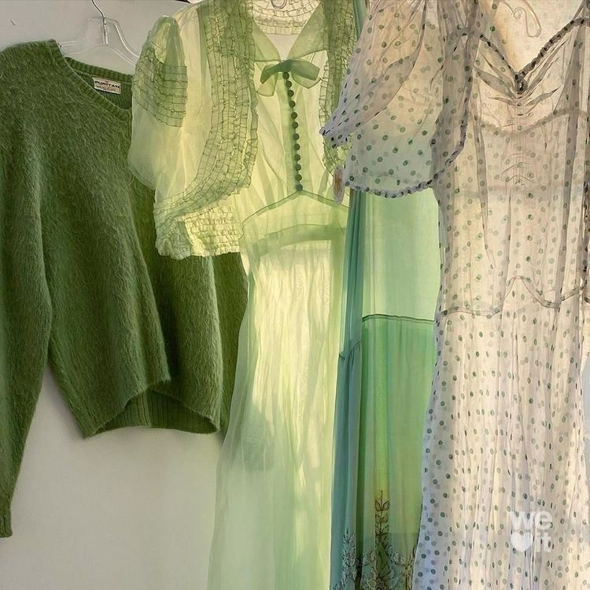
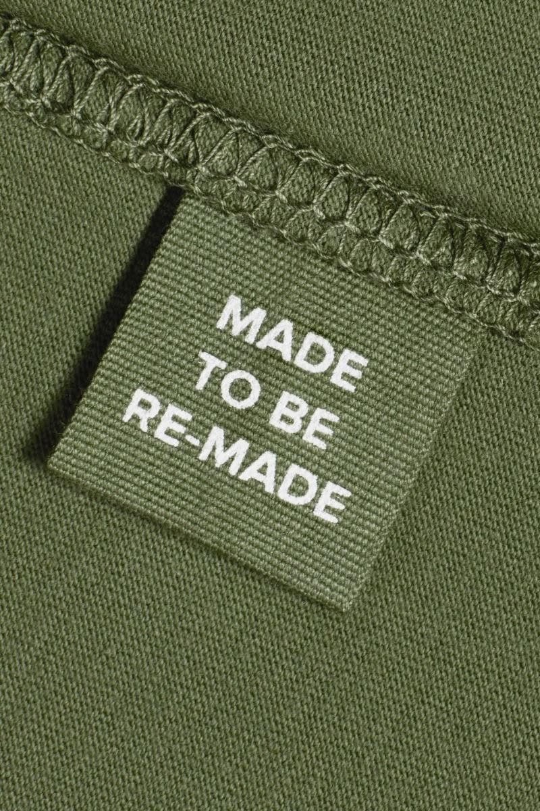
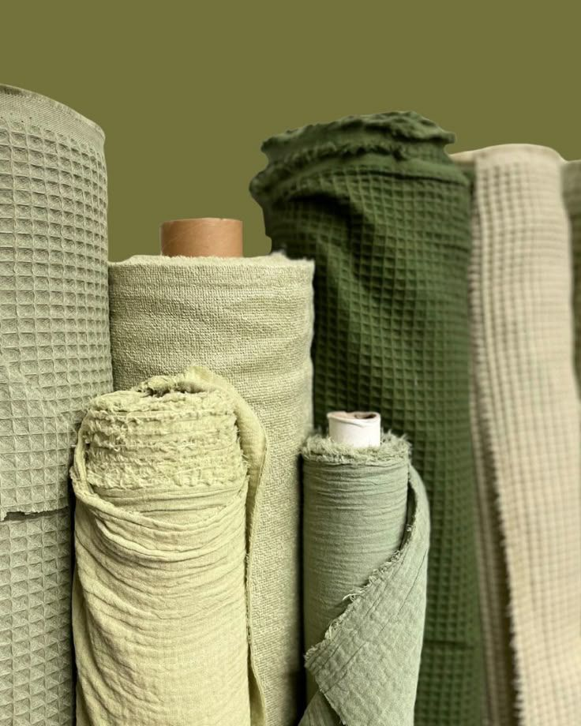

Brechó e Peças de Segunda Mão
Aumente o ciclo de vida das suas roupas através do reuso, troca e consumo consciente em brechós parceiros.
Te conectando à moda sustentável com autonomia e respeito à diversidade.

Aumente o ciclo de vida das suas roupas através do reuso, troca e consumo consciente em brechós parceiros.

Apoie artesãos, costureiras independentes e pequenas marcas que produzem com ética e sustentabilidade.

Descubra tecidos de baixo impacto, fibras orgânicas, corantes naturais e processos de upcycling.
Fique por dentro dos relatórios de impacto socioambiental, dicas de conservação e eventos do setor.
Ler notícias recentesOportunidades de trabalho e voluntariado em empresas e iniciativas de moda sustentável.
Buscar oportunidadesTroque ideias, compartilhe dúvidas sobre upcycling e conecte-se com outros consumidores conscientes.
ParticiparEsta plataforma foi projetada para que todas as pessoas possam navegar com autonomia. Garantimos suporte integral a leitores de tela, navegação por teclado, contraste adequado e descrições detalhadas de imagem.
Encontrou alguma barreira de acessibilidade? Fale conosco diretamente através do nosso canal de suporte.
Enviar feedback de acessibilidade